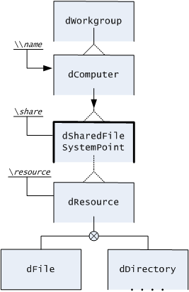
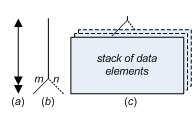

i050809
TROST
InfoNote
Navigational Data Model
Diagramming 0.75
0.75 2017-07-01 -07:36 -0700
|
|
i050809
TROST
InfoNote |
0.75 2017-07-01 -07:36 -0700 |
- Latest version: The latest version of this InfoNote is available on the Internet at
<http://TROSTing.org/info/2005/08/i050809b.htm>.- This version: 0.75 <http://TROSTing.org/info/2005/08/i050809c.htm>. Consult that page for the latest electronic copy and status of the material.
If used effectively, entity modelling enables a good analyst to talk to users and systems people in their own language and about the issues with which they are concerned.
-- Richard Barker (1996, p. xvii)
Diagrams are important for TROST in the identification of process patterns. Many of the process patterns lead to patterns in the structure of artifacts, such as collections of documents, that are instruments of trustworthy activity and care. These patterns are easy to portray in a data model that provides for cross-referencing and that assumes structured material but not a conventional relational database model. Many of the patterns relate to the kind of navigation, such as cross-referencing and cross-location that are manifest in the artifacts. A navigational model has served in these odd-structured cases on-and-off over the past 25 years. Because the TROST bootstrap cases involve hypertexts and documents that may exist on paper and on digital media, this navigational data model, slightly modernized, has been found useful once again. Here it is finally documented in its entirety.
-- Dennis E. Hamilton,
2005 August 311. Hierarchical Organization
2. Connectors
3. Data-Entity Type Forms
3.1 Ordinary data entities
3.2 Shared data-entity types
3.3 Association data-entity types
4. Data-Entity Type Naming
5. Other Data Models
5.1 Data model defined
5.2 Relationship to other data models
6. Musings
7. Resources and References
Figure 1. Typical Navigational Data-Entity Hierarchy. Data-entity cases are indicated by variations in the rectangles, in connectors among the boxes, and in special attachments in the diagrams. Each rectangle signifies a data entity type, with the connecting lines establishing their hierarchical composition of constituent data-entity types.
1.1 Hierarchical organization is used to specify the subordination of constituent data-entity types under an immediately-encompassing data-entity type. Constituents relevant to portraying the essential structure are shown. Additional constituents may be omitted or simply be named within the rectangle shape corresponding to their encompassing data entity. In that case, the constituent is often referred to as an attribute of the encompassing data-entity type (cf. 5.2.3). For the navigational model there is no material difference between the two approaches and constituent type DataEntity.Constituent-1 would identify either form for introduction of type Constituent-1 under type DataEntity (section 4, below).
1.2 Connecting lines establish the navigation that is afforded directly by the structure under some tacitly-understood operation (section 5.1). In any constituent of a data-entity instance, navigation may proceed from any entry point (in Figure 1, the arriving arrow associated with the unique key) through any rectangle and along connecting lines so long as no opposing arrow is traversed. For a "one of" connection, the one that is there in a given instance is the only one that can be entered and exited. For a multiple-occurrence repeated constituent, there is presumed to be an enumeration principle for navigating all occurrences. Direct navigation into one of multiple occurrences depends on existence of a known key or understood position in the enumeration.
Figure 2. Connector Variations The variation among connector styles is illustrated in Figure 2.
2.1 Arrow heads on connecting lines signify unidirectional navigational entries (fig. 2a). Important occurrences are entry to a date-entity type via key, or via navigation from some global entry. The entered constituent, often the top-level of a data-entity type, is represented with a heavier rectangular frame to emphasize its importance as a navigational entry point. Arrow heads on any connectors signify restrictions on the direction of navigation.
Figure 3. Workgroup File Sharing (simplified) 
2.2 Single lines entering the top of a constituent's rectangle signify exactly one (solid, fig. 2b) or at most one (dashed, fig.2c) occurrence per superior.
2.3 Fanned (angular) lines above a constituent rectangle signify provision for multiple occurrences. The specification of lower and upper bounds, m and n, represents the general case (fig. 2f). An unbounded value for n is represented by a dashed line in place of the upper bound (fig. 2d-e). For m=1, the lower bound is omitted (fig. 2d). For m=0, a dashed line is used in place of the lower bound (fig. 2e). Additional variations are permitted. Those shown are likely to exceed the needs of most situations.
2.4 Limitation to one-of a selection occurs on the horizontal line above two or more constituent rectangles, at the connection upward to the containing data-entity rectangle or another horizontal line (fig. 2h). In this case, exactly one of the descending cases will occur for a given instance of the superior data-entity type. Descending connectors to the constituents subjected to one-of selection may specify any of the multiplicity conditions (fig. 2b-g), although practical cases tend to be simple, as in (fig. 1).
2.5 Levels of Key Uniqueness. Hierarchical use of connectors is illustrated in Figure 3. Levels of relative key uniqueness are also illustrated. Within a workgroup the computers are identified by workgroup-unique names. Any shared file-system points are identified by names that are unique for the computer, and so on. Here, the use of a data-entity model to represent that arrangement is emphasized by the use of a fixed-pitch font and prefixes on the names of the data-entity types (section 4). In this simplified case, it would appear that individual resources are potentially-identifiable by compound keys of the form \\name\share\resource.
Figure 4. The Three Data-Entity Type Forms.
Three different rectangular shapes are employed for designation of data-entity types in the navigational model diagrams.
3.1.1 Ordinary data entities are signified with a simple rectangle (fig.4b). The name of the data-entity type is recorded inside the rectangle. Additional conditions and attributes may also be identified within the rectangle, which can be extended vertically if needed.
3.1.2 Data entities without emphasized constituents. When no constituents are featured, solid lines are used for all sides of the rectangle, as illustrated in three data-entity types of (fig. 1) and the dFile data-entity type of (fig. 3).
3.1.3 Data entities with constituents. When constituents are emphasized by being "exploded out" of an encompassing data-entity type, the lower line of the rectangular box is omitted and the connector to the constituent data-entity types is extended up into the rectangle of the encompassing type. This provides visual emphasis that the constituent types are indeed part of the encompassing data-entity type. Constituent-2 in (fig. 1) and the dWorkgroup data-entity type of (fig. 3) illustrate this principle.
3.1.4 Line weight and rectangle shape. The rectangular border may be drawn with a heavier line in order to identify the significant data-entity types that serve as entry points to the structure. This is employed for the Data Entity (fig. 1) and the dSharedFileSystemPoint (fig. 3). This and similar emphasis has no technical significance. Rectangles may also have variations in size and proportions in order to carry additional information. Again, there is no technical significance attached to these variations and decorations.
3.2.1 Shared types are signified with additional vertical lines within the rectangle (fig. 4c). The type, defined elsewhere, is incorporated as a constituent just as if it were described where the shared-type rectangle occurs.
3.2.2 Shared type, not instance. It is important to recognize that it is the description of a type that is being reused. There is no automatic relationship among instances of a shared type employed in different encompassing data-entity types.
3.2.3 Constituent data-entity types are allowed. Constituents being added or specialized at the point of sharing can be shown beneath the shared data-entity type rectangle. The reconciliation of the constituents established at the definition of the shared type and at the use of the shared type must be straightforward. The point of use provides specializing overlay and cannot remove anything provided in the definition of the shared type. A common case for decoration of the shared data-entity type in this way is with regard to stipulation of any constituent association types. The association types are usually added locally, because of the need to name the correct converse-relationship conditions (section 3.3.3).
3.3.1 Association with other data-entities. The association of instances of a data-entity type with instances of (the same or different) data-entity type is signified by a rectangle enclosed within the data-entity type rectangle (fig. 4a). The enclosed rectangle names the target data-entity type, that of the associated instances.
3.3.2 Naming the target rôle. The space between the top of the inner rectangle and the outer rectangle of the association data-entity type is used to name the rôle that the associated data-entity type serves relative to the data-entity for which the association is a constituent.
3.3.3 Converse Associations. Every association data-entity type has exactly one converse association as a constituent of the target data-entity type. The target rôle of the converse association is identified in the space between the bottom of the inner rectangle and the outer rectangle. In the instances of these data entities, there will be a unique, one-two-one matching of association data-entity occurrences and converse data-entity occurrences, identifying a relation and its converse at each "ending" association type (Whitehead & Russell 1962, *31).
3.3.4 Example. The modeling of parts explosion for manufactured assemblies in Figure 5 illustrates the use of converse associations in reflecting how parts may be assemblies and are used in specific places as subassemblies of further assemblies. The symmetry of details in the converse associations is valuable in making the relation unambiguous. The notation also makes the converse-association pairs easy to locate, especially in extensive models where the mated associations appear on separate pages of the model's diagrams.
Figure 5. Converse Matching of Association Types in Data-Entity Relationships. The dashed lines indicate the converse associations in a data model for characterizing assemblies manufactured from parts that may themselves be assemblies. In this model, the distinct use of identical parts is accounted for, facilitating revision of some parts in an assembly without revising them all.
4.1 Unambigous Naming. In extensive data models, there will often be similarly-named components (especially in association types). In order to be more specific, hierarchical naming is used, with "." typically used as the separator. For example, the dPart.usedAs data-entity type in (fig. 5) specifies dAssembly.dComponent as its target data-entity type, with converse association dAssembly.dComponent.requires.
4.2 Other Notational Features. The unambiguous names can also be used as a form of instance identification, using decorations such as dAssembly[aID].usedFor.dPart[pID] and dPart[].usedAs[].
4.3 Typography. To emphasize that the data-entity model is for data structures, a fixed-pitch, computer-text font style is used when the names of data-entity types, data entities, and associations are presented in the diagrams and text.
4.4 Disruption of Automatic "Meaning." Typographical convention is employed to emphasize that the model is about organizations of data, no matter how much the terms are chosen to suggest the subject of that data (section 5.1.4). Unusual naming forms, typical of those used in object-oriented programming, are useful for disrupting the otherwise automatic shift of awareness past the data-entity model to consideration of the entities the data are about (sometimes, other data entities). This leaves normal language available for informal discussion of the entities about which the data model is intended to be valid, as in (section 2.5).
5.1.1 The simplest definition of a data model is as a "relatively-simple representation, usually graphic, of a complex ... data structure (Rob & Coronel 2002, p.811)."
5.1.2 E. F. Codd gives strong reasons for a more rigorous statement (1980, abstract). Chris Date provides a simpler and slightly more general paraphrase (1999; 2001, p.136), adapted further here:
- A collection of data object [data entity] types, which form the basic building blocks for any database [organization of instances] that conforms to the model;
- A collection of general integrity rules, which constrain the set of occurrences of those object types that can legally appear in any such database;
- A collection of operators, which can be applied to such object occurrences for retrieval and other purposes
5.1.3 As applied in TROSTing, the navigational data model exhibits these characteristics in an informal way. Application to mainly-static data organizations makes attention to (3) less critical. Integrity is maintained by agreement and by the separation of maintenance and update from publishing and access in those applications to which the models are being applied for TROSTing.
5.1.4 For the navigational data model the term "data entity" is preferred to simply "entity" or "object." There's often an intention to represent perceived features and relationships of external entities, but it is fundamental that we are only dealing with data entities in the model (which is a formal model in that regard). The distinction is important because in TROSTing we also refer to entities as such in terms of material artifacts, processes, participation, and engagement in the application settings of information systems. It is important in this case to take special precautions against confusion between non-data entities (and other data entities) and selections of data that are intended to be about them (Kent 2000, pp. 226-229). Consider the difference between a physical book, the text of the book as data, and a catalog entry that might refer to both. Distinct typography is useful as a way to remind ourselves that the model is of data and digitally-recorded material, no matter how much we want it to be consistent in some way with perceived patterns of entities in the world. This allows ordinary writing and nomenclature to be reserved for where it is intended that focal awareness be on the entities, not the data model (Polanyi & Prosch 1975, pp. 69-70).
5.2.1 In terms of abstraction levels (Rob & Coronel 2002, section 3.2), the navigational data model falls on the conceptual side of internal models. The model is not strictly internal in that it does not dictate the software employed for representation; a variety of internal models can be used for that purpose, as needed. The navigational model is semi-conceptual insofar as it can also be the highest level used in the original conception and specification of a data model.
5.2.2 The navigational data model is particularly suited to situations where, for whatever reason, it is valuable to depict data entity types having internal subordinate structure over which there is a cohesive locality (direct navigation) condition. This has appeal for representation of documents and other structured material that can be recorded on serial media (including communication links) or packaged in some other persistent form, such as organizations of web pages. The navigational data model appears to be adequate for the XML Information Set and its applications (Cowan & Tobin 2004) and it may be useful in conjunction with applications of the RDF Resource Definition Framework (W3C 2004).
5.2.3 The navigational data model's constituent types correspond to "attributes" in conventional data models, especially ones oriented farther toward the conceptual level. In the case of private, singleton constituents, the distinction is somewhat arbitrary (Fowler & Scott 1997, p.63). Whether a subordinate data element is depicted as an attribute (and named within a box) or as a separately-drawn constituent is primarily a matter of emphasis in the presentation of navigational models, ignoring the possibility of distinct implementations at a more-physical level of representation.
5.2.4 In practice, we tend to suppress detailed identification of attributes, providing just enough to reflect the intension for a data-entity type and to show important relationships. Attributes that are employed entirely for plumbing (data infrastructure) purposes and to satisfy the representation system are rarely identified: We call attention to housekeeping attributes only when they happen to be the focus of attention.
5.2.5 Sometimes, because of repeating groups and similar qualities of constituents, it doesn't work to collapse a navigational data entity into a single conceptual-model entity. In that case, it will be necessary to factor out a separate entity (or entities) to express grouping via a relationship. The same consideration applies when transforming to UML associations (Fowler & Scott 1997, pp.56-62).
5.2.6 Although relational-model normalizations can be applied to navigational models, the navigational approach seems more appropriate for settings that would be considered seriously de-normalized, such as navigational views, report structures and other forms where the intended achievement of local navigation is via position and adjacency on a storage medium and redundancy is not a major concern.
5.2.7 In general, navigational data models are inter-convertible with the usual suspects (Hay 1999). Some constraints and features will be lost in moving one direction or the other, but there is usually some way to preserve key features even if forced into an unnatural representation (e.g., representing disjoint subclasses as an any-one-of constituency). The appeal of the navigational model is with regard to economy of expression and naturalness in a given situation and level of detail. There is no intention to have navigational models be suitable for all data-modeling situations.
5.2.8 In TROSTing, the navigational model is found useful for expression of patterns in data structures arising in work flows, documentation, and web presence. The navigational patterns can be taken as overlays that are fused together in a single data model in which each of the patterns is manifest, sometimes in more than one way.
Figure 6. Three angles on multiplicity 
6.1 The first book that I owned on database design used the connector form (fig. 6a). That symbology, promoted by James Martin (1977), didn't work visually for me at the time, so I chose (fig. 6b) as a way to remember the end having the multiplicity and also as a way to reflect the variety of different bounds cases. This was also suggestive to me of other diagram styles that were carry-overs from punched-card data-file designs and other groupings of sequential records (fig. 6c).
6.2 Once I'd settled on the essentials of the technique, I often used it to recast other methodologies as a way to explain them to myself. It gave me a way to test the conceptual integrity and completeness of the model at hand regardless of the author's choice of diagramming or symbolic notation.
6.3 As well as I can recall, the fan-out symbol was not inspired by seeing the crow's-foot connectors in other data models. The only recollection I have of crow's feet when I finally saw them used was as confirmation that the fan-out symbols I already used were appropriately suggestive. It was also clear that the fan-out covers more cases by simple line-shape variations. I haven't found where Bachman's single arrow-head (1969) was transformed into the crows-foot symbol and memorialized in the Crows Foot Entity-Relationship Model (Rob & Coronel 2002, section 3.4), and that has me wonder who actually did it, and where. James Martin objected to the crow's foot model early on, but for a technical reason related to functional dependency that doesn't seem relevant to the choice of connector-end symbols (1982, p.108). Later, use of arrows was abandoned in favor of heavy use of crow's feet symbols (Martin 1987, p.196n). Ian Palmer is credited with crow's-foot notation in that extensive treatment of entity-relationship diagrams (Martin 1987, p.236).
6.4 Although it wasn't part of my original motivation, removing the use of arrow heads to indicate multiplicity made them handy for indicating where there are directional restrictions on navigation, and I made use of that immediately. This opportunity also arose in UML (Fowler & Scott 1997, fig. 4-3). My interest was being able to take design advantage of cases where the application only requires direct navigation in one direction.
6.5 Having identification of keys on the side of the data entity type with elevation to the level at which the key values provide unique discrimination was introduced very early. I used this in modeling IMS databases (and indexed-sequential equivalents) in this manner. I don't know what first inspired me to pull them out and up like that, but it didn't take much to then notice that elevation could indicate level of global uniqueness. That simple nicety has been extremely helpful in confirming the identification of compound keys for access of a hierarchy-internal component.
6.6 The present navigational data model formulation is essentially the same one last documented in (Hamilton 1993) and used in one form or another for over 25 years. I am now exploiting the availability of alternative typography to introduce some linguistic conventions for disrupting confusion of data and (non-data) subjects of the data. The key diagramming alteration is omission of the bottom line of entity-type boxes that have constituents exploded out. I am using this to emphasize that the subordinate elements are always constituents and the parent entity type encompasses them. This also makes the limited representation of sub-types more apparent as a special case of the exactly-one-of condition (Hay 1996, pp.12-13). The navigational data model does not have sub-typing; it does provide an intermediate-level representation of some sub-typing cases.
6.7 Now that I've seen the Barker-Ellis method (Hay 1999), I am inclined to favor that methodology for higher-level conceptual models of data-entity inter-relationships. I continue to prefer the navigation data model at intermediate levels for verifying navigability and the integrity of relationships. The critical feature of the Barker-Ellis approach, for me, is its preservation of the different perspectives that apply from the opposite ends of a relationship-linkage, especially when the same data-entity types are related in more than one way. This is also achieved in the navigational data model, preserving this important facet in moving between conceptual and internal depictions (Tsichritzis & Lochovsky 1982). I have no position about the importance of positional arrangement of the diagrams as strongly advocated in (Hay 1996, pp.16-18). It seems that the preferable presentation of hierarchic expansion in the navigational data model may be at odds with the positional use of the Barker-Ellis dead-crow notation. Further analysis is required to determine how greater harmony between the two presentations can be achieved.

|
created 2005-08-21-16:31 -0700 (pdt) by
orcmid |